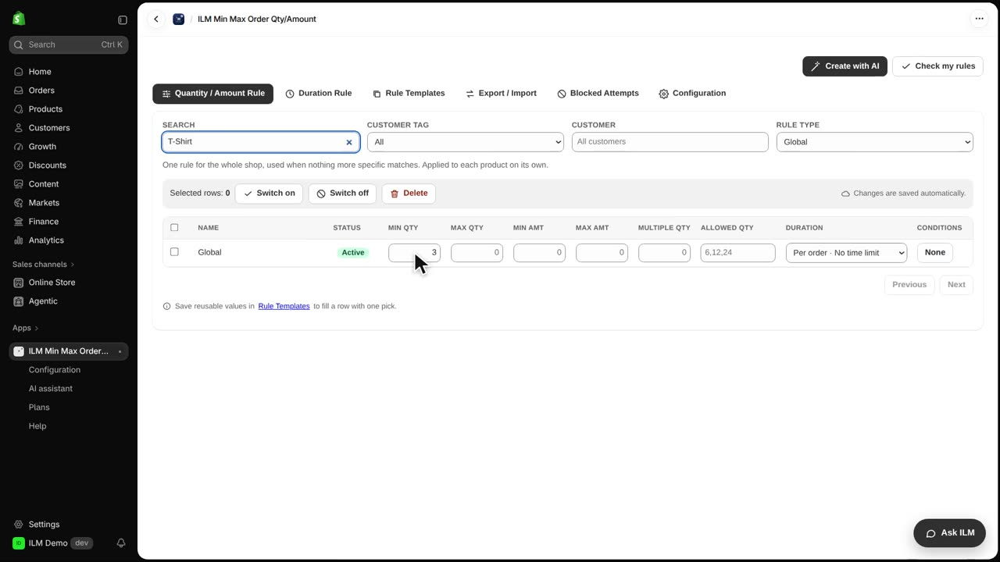
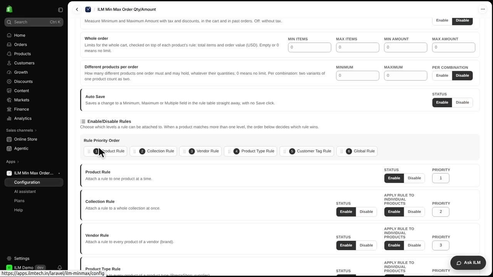
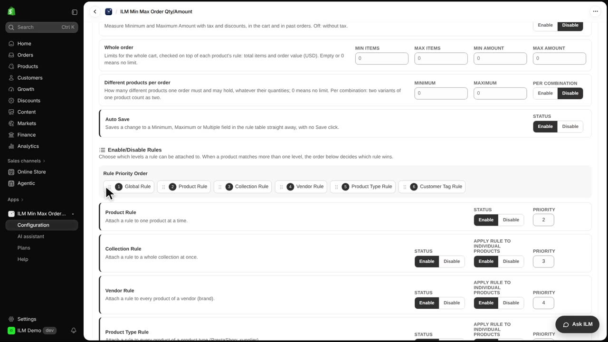
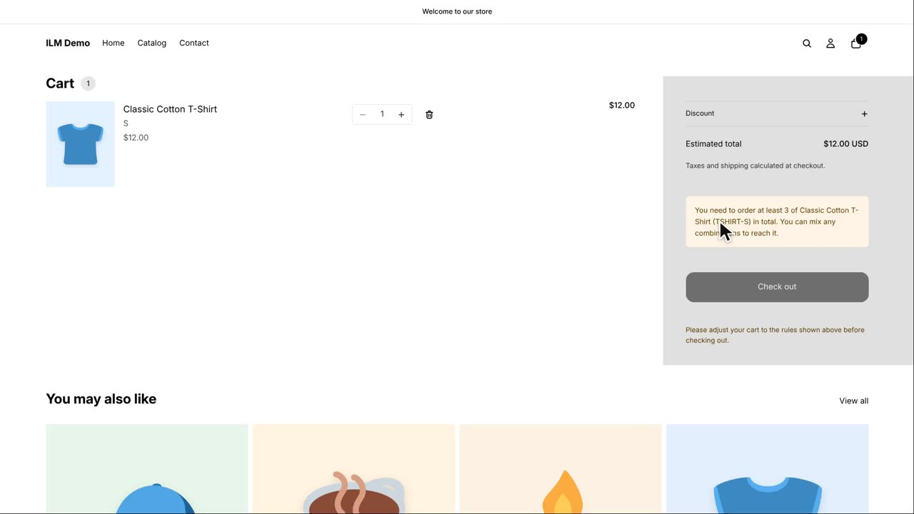

When a product matches more than one rule, the app needs to know which rule wins. That is what the Rule Priority Order is for: it decides whether the product rule, the collection rule, the vendor rule, or the global rule takes charge. Today we use the Classic Cotton T-Shirt, which has its own minimum of one, while the Global rule asks for three. Watch how simply reordering the list changes what the shopper is allowed to buy.
Here we set up the conflict. The Classic Cotton T-Shirt has its own product rule with Min Qty set to one, and the Global rule has Min Qty set to three. With one T-shirt in the cart, the shopper is currently allowed to check out, because the product rule is winning.

Now we open Configuration and scroll down to Enable/Disable Rules. This section holds the Rule Priority Order list, and Product sits at the top. Because Product comes first, the T-shirt's own rule wins, so a single T-shirt is fine even though the Global rule asks for three.

Next we drag Global to the front of the list. We grab the Global row, move it above Product, and drop it in first place. The list now reads Global first, then Product, and the highlight confirms the new order has been saved.

Back in the cart, the same single T-shirt is now refused. Because Global comes first in the priority order, the global minimum of three applies, and the notice tells the shopper they need three T-shirts to continue. Nothing about the cart changed; only the rule order did.
